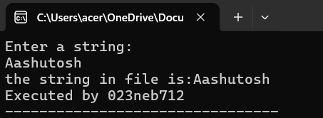

C program to create a new data file and store a character in it using putc(). Read the character afterwards using getc().
C program to create a new data file and store an integer in it using putw(). Read the integer afterwards using getw().
C program to create a new data file and store a string in it using fputs(). Read the string afterwards using fgets().
C program to create a new data file and store a sentence “I love C programming.” using fwrite(). Read the file afterwards using fread() up to 8 characters only.
C program to store Name, Address, Age and Salary of 10 employees in a data file STAFF.TXT.
C program to display the records whose salary is greater than 15000 and who is younger than 25 from the data file STAFF.TXT created in Q5. Display the records in proper format.
C program to add two new records of employees in STAFF.TXT created in Q5.
C program to read the STAFF.TXT file created in Q5 and save the records of employees with Address “kathmandu” in a new KATHMANDU.TXT file.
v
C program to display the records of the KATHMANDU.TXT file created in Q8 and rename it with NEWKATHMANDU.TXT filename.
C program to delete the file NEWKATHMANDU.TXT from Q9.
#include<stdio.h>
#include<stdlib.h>
int main()
{
FILE *fp;
char ch,re;
fp=fopen("D:\\sample.txt","w+");
printf("Enter a character:\n");
scanf("%c",&ch);
fputc(ch,fp);
fseek(fp, 0, SEEK_SET);
re=fgetc(fp);
printf("the character in file is:%c \n",re);
printf("Executed by 023neb712");
fclose(fp);
return 0;
}
#include<stdio.h>
#include<stdlib.h>
int main()
{
FILE *fp;
int i,j;
fp=fopen("D:\\sample.txt","w+");
printf("Enter a integer:\n");
scanf("%d",&i);
putw(i,fp);
fseek(fp, 0, SEEK_SET);
j=getw(fp);
printf("the integer in file is:%d \n",j);
printf("Executed by 023neb712");
fclose(fp);
return 0;
}
#include<stdio.h>
#include<stdlib.h>
int main()
{
FILE *fp;
char i[50],j[50];
fp=fopen("D:\\sample.txt","w+");
printf("Enter a string:\n");
scanf("%s",&i);
fputs(i,fp);
fseek(fp, 0, SEEK_SET);
fgets(j,50,fp);
printf("the string in file is:%s \n",j);
printf("Executed by 023neb712");
fclose(fp);
return 0;
}

#include <stdio.h>
#include <string.h>
int main() {
FILE *fp;
char sentence[] = "I love C programming.";
char buffer[9];
fp = fopen("file.txt", "w");
fwrite(sentence, sizeof(char), strlen(sentence), fp);
fclose(fp);
fp = fopen("file.txt", "r");
fread(buffer, sizeof(char), 8, fp);
printf("Read from file: %s\n", buffer);
fclose(fp);
return 0;
}